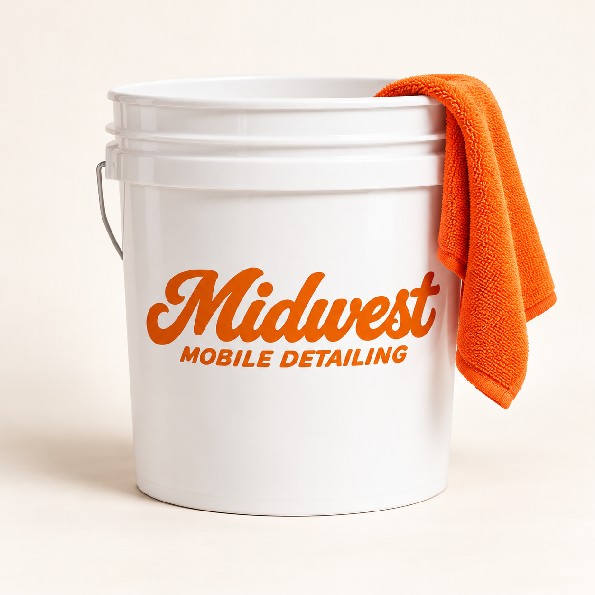

Made for the Midwest.
Built on hard work.
Midwest Mobile Detailing was built on a simple idea — high-quality detailing, right at your home. Serving Johnson County, Kansas, we bring our services to your driveway with professional interior and exterior detailing.
As a young, local business owner, I take pride in delivering a great experience, attention to detail, and results that speak for themselves.
Book Your Detail →
Johnson County
Professional mobile detailing throughout Johnson County, Kansas.
Frequently Asked Questions
Do I need to provide water and electricity?
Yes. We ask customers to provide access to an outdoor water hookup and a standard electrical outlet at the service location.
When do I pay?
Payment is due after the detail is complete. No online payment is required when requesting an appointment.
Is my appointment confirmed when I request it?
You can book online using our live calendar. After submitting, check the result on screen: “Appointment Booked” means your appointment is confirmed; “Appointment Requested” means it is awaiting approval. We’ll text the mobile number you provide if we need to confirm details or update your appointment.
Can you remove pet hair?
Yes, heavy pet hair removal is available as an add-on. Price is determined after inspecting your vehicle.
What if my appointment changes or the weather causes a delay?
If weather, an earlier appointment, or an unexpected issue delays your arrival window or means we need to cancel or reschedule, we’ll text the mobile number you provide. Please use a number where we can reach you on the day of your detail.
How do I cancel or reschedule?
If your plans change, call (913) 905-9935 or send a text as soon as possible so we can help cancel or move your appointment. If I don’t answer, please leave a message.
Which areas do you serve?
Johnson County, Kansas.
Questions or a change of plans?
Call or text (913) 905-9935 for questions, a vehicle quote, cancellations, or rescheduling.
If I don’t answer, please leave a message.